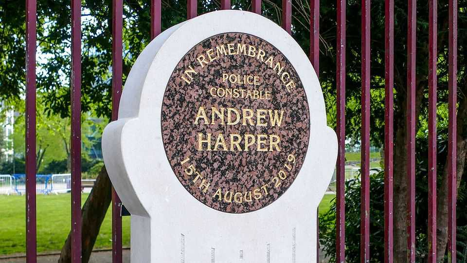
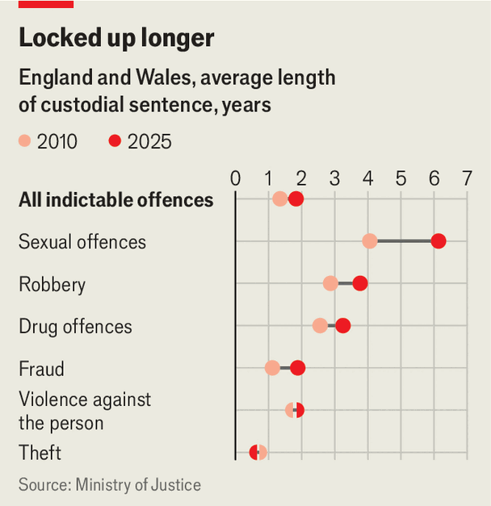

The parlous state of Britain’s prisons is Burnham’s first test
The tricky politics of releasing prisoners early

Aug 13th 2026
ANDREW HARPER, a 28-year-old police constable (pc), had been married for just four weeks when he was killed in the line of duty in 2019. Attempting to prevent three teenagers from stealing a quad bike in Berkshire, he was caught by a tow-rope and dragged at ferocious speed by the perpetrators’ getaway car. The ghastly crime shocked the country and the culprits were convicted of manslaughter in 2020.
Two of those men are now among 5,000 prisoners eligible for early release under the government’s latest scheme to prevent the prison system from “collapsing”. Andy Burnham, the prime minister, had said that he could not find a way to keep the killers—and all those convicted of manslaughter—behind bars without the prison system reaching capacity. That was before 1m people signed a petition signalling their outrage. On August 11th Mr Burnham relented: he was “increasingly confident” that the notorious killers would remain imprisoned. The crisis is a test of Mr Burnham’s ability to make hard decisions.
Weeks after taking power in 2024 the Labour government implemented an emergency early-release scheme as prisons were 99% full, prompting allegations that it was soft on crime. The latest scheme is even more controversial: from October 1st criminals imprisoned for less serious offences will be released after serving 33% rather than 40-50% of their sentence behind bars, while those convicted of more serious offences—including manslaughter—will be eligible for parole after serving 50% rather than 66% of their sentence.

Although the early-release schemes colour public perceptions, in practice the justice system has over time become more severe. For most crimes, the share of convictions that result in immediate custodial sentences and the average length of those sentences have risen since 2010 (see chart). Meanwhile, prison capacity is no bigger now than it was in 2012.
The government has needed early-release arrangements to prevent prisons from overflowing. The Ministry of Justice expects the prison population to rise from 85,600 today—equivalent to 97% of capacity—to 96,000 by 2032. The government is spending £5bn ($6.8m) on building an additional 14,000 places by 2031, but the country is predicted to run out of cell space again next year.
Britain has the highest incarceration rate in western Europe, but nearly two-thirds of the 90,000 people who were given an immediate custodial sentence last year were imprisoned for a year or less. There is plenty of evidence that prison does this group of offenders little good, instead encouraging them into a life of crime. Around two-thirds of them will reoffend.
In response to PC Harper’s death, Parliament changed the law in 2022 to hand down mandatory life sentences for those who kill emergency workers while committing a crime. But “Harper’s law” cannot apply retroactively. Mr Burnham wants to explore three options to free up more prison cells to keep offenders such as PC Harper’s killers under lock and key: speed up the deportation of 10,000 foreign prisoners; release some of the 2,300 people detained indefinitely; and empty some women’s prisons and repurpose them for men.
All these schemes will be fraught with difficulty. Yet Mr Burnham is clearly desperate to keep the public onside.■